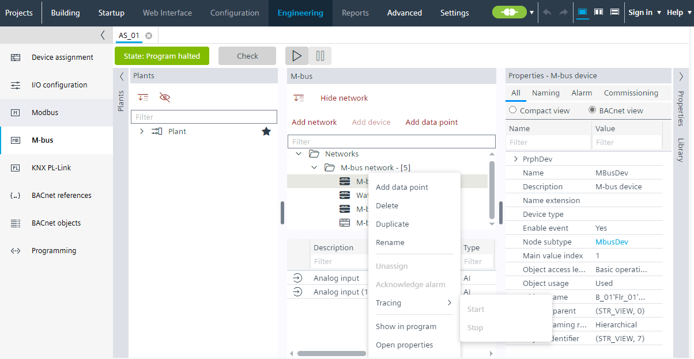
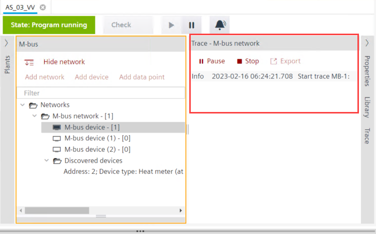

M总线追踪
运行 M-bus 网络/device 的跟踪并以定义的格式保存 M-bus 跟踪数据。


M 总线跟踪不可通过 MS/TP 设备使用。当通过 WLAN 连接时，它可用于 MS/TP 设备，因为我们在那里没有带宽限制。
- Go to Engineering.
- Open the M-bus task and go online.
- Right-click the M-bus device and click Tracing > Start.
- A Trace - M-bus network window displays on the right. You can see the data in a raw format. Pause, Stop and Export buttons are available.

- Click Pause to make a temporary halt to the tracing operation.
- Click Stop to cease the tracing operation. An alternative option is to do a right-click the M-bus device and click Tracing > Stop.
- Click Export to save the file. Save the file in .pcapng format and click Save.
- The trace data is stored in the .pcapng file.